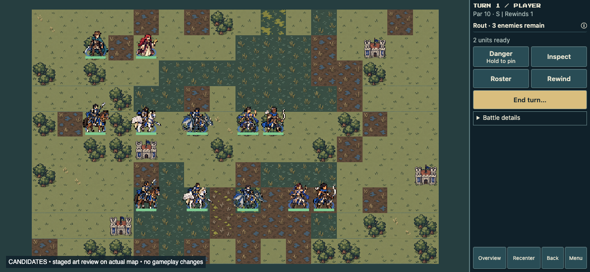

Cavalier, Pegasus Knight, Wyvern Rider, Dancer and near-white-bow Archer — two player appearances each. Edric and Sera are unchanged comparison anchors.
Development principles · Exact prompts and class briefs · Sword-class review
Both rows read left to right: Cavalier · Pegasus Knight · Wyvern Rider · Dancer · Archer. Player A is in the middle row; Player B is in the lower row. The lords are above.

The new recruits broaden East, Southeast, South and West Asian-inspired appearances through skin undertones, facial structure and hair, while keeping the same game's clothing language. These are generation design briefs, not claims that ancestry can be inferred reliably from tiny sprites.
Size standardization remains a later pass. In particular, compare rider visibility against mount size, and the Archer's body size against infantry. The two mount rows have extra spacing for this first review; dense formation testing remains pending.
The near-white bow reads more clearly than the wooden version. Pegasus feathers and Wyvern membranes retain different shapes. Dancer is less immediately recognizable than the weapon-bearing classes and remains a review question. Rider faces lose substantial detail at this scale, so appearance diversity is easier to assess in source sheets. Size consistency is still deferred.
64×64 anchored textures at 1× below. Click a sheet for the full source.
Static grass/swamp, stone, grayscale and silhouette review. Animation, fog, range overlays, live acted-state behavior and real-device testing are still pending. Samples are not production-ready animation sets.